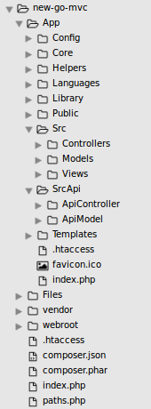

New go mvc is a simple framework created with php, it contain and a simple api request on side.
It is a simple code to understand for beginers.
This framework it is compatible with postgres SQL, Keep inmind, this MVC work with Composer, if you dont have the composer.phar on your folder site
go to site and see instructions for installation .
For installation:
before create a database with the name you want on postgres:
CREATE DATABASE databasename ENCODING 'UTF-8';
and create the seguents tables:
Tables: permissions, role_permissions and user permissions are used for give the permsiossions of access to roles and users foir one page.
If you dont have the postgres sql installet check and install on machine.
for check : on terminal
CREATE USER databasename WITH PASSWORD 'zxczxc';
GRANT ALL PRIVILEGES ON DATABASE databasename TO databasename;
psql --version
I sugest to use ubuntu for everything on development and programing!
CREATE TABLE IF NOT EXISTS users(
id serial PRIMARY KEY,
name VARCHAR(30) NOT NULL,
subname VARCHAR(30) NOT NULL,
email VARCHAR(64) UNIQUE NOT NULL,
username VARCHAR(30) UNIQUE NOT NULL,
password VARCHAR(255) NOT NULL,
token VARCHAR(255),
tokenpassword VARCHAR(255),
role_id smallint,
created timestamp DEFAULT CURRENT_TIMESTAMP
);
CREATE TABLE IF NOT EXISTS permisions(
id serial PRIMARY KEY,
controller VARCHAR(20) NOT NULL,
method VARCHAR(20) NOT NULL,
param1 VARCHAR(20) NOT NULL
);
CREATE TABLE IF NOT EXISTS role_permisions(
id serial PRIMARY KEY,
role_id int NOT NULL,
permision_id int NOT NULL,
permited bool default false,
FOREIGN KEY (role_id) REFERENCES role(id),
FOREIGN KEY (permision_id) REFERENCES permisions(id)
);
CREATE TABLE IF NOT EXISTS user_permisions(
id serial PRIMARY KEY,
permision_id int NOT NULL,
user_id int NOT NULL,
role_id int NOT NULL,
permited bool default false,
FOREIGN KEY (permision_id) REFERENCES permisions(id),
FOREIGN KEY (user_id) REFERENCES users(id)
);
ALTER TABLE permisions ADD column sublink BOOL NOT NULL default false;
After install that create a local domain: on apache : or nginx, id you dont have installed apache or nginx check and install.
Check on terminal for apache: apache2 -v for install sudo apt-get install apache2
Check on terminal for nginx: nginx -v for install sudo apt-get install nginx
on the folder of script (New go mvc)/_data/apache/apache.txt you can see the configuration for apache server
Go to terminal sudo nano /etc/hosts and insert newstie.local for your domain or give another name you want, save with F2 and go on alwas on terminal , cd /etc/apache2/sites-enabled/ create the file snewsite.local.conf and insert the code on have see on apache.txt on the folder apache (New Go mvc);
like this:
ServerName newsite.local
DocumentRoot /home/yourdocumets/newsite
ErrorLog ${APACHE_LOG_DIR}/newsite.local_error.log
CustomLog ${APACHE_LOG_DIR}/newsite.local_access.log combined
Options -Indexes +FollowSymLinks +MultiViews
AllowOverride All
Order allow,deny
Allow from all
Require all granted
/App/_data/DatabasePostgres.ini for database connections/App/Config/Config.php for general utilities.
Your folder site.

The model, controller and view is created for roles and permissions.
You can go to /Permissions/index and create the files inserting on form Controller and Method and the file on view, controller and model are creating automatically
or can create manually: go to /App/Src/COntrollers and create file example PageController.php
namespace Go;
after this on folder
use Go\AppController as AppController;
class PageController extends AppController
{
public function index(){
$data['title'] = 'Index';
$data['headertitle'] = 'Home page';
Template::View($this->Folder,'Index',$data);
}
public function add(){
$data['title'] = 'Add';
$this->Model->add();
Template::View($this->Folder,'Start',$data);
}
public function Start(){
$data['title'] = 'Start';
$this->Model->start();
Template::View($this->Folder,'Start',$data);
}
}
App/Src/Models and create a file PagesModel.php
namespace Go;
use Go\Connection as Connection;
use Go\AppModel as AppModel;
class PageModel extends AppModel
{
public function index(){
$title = "From index pages model";
return $title;
}
public function add(){
$title = "From add pages model";
return $title;
}
}
The name of method on controllers public function index() must be equal with the name of folder App/Src/Views in uppercase Index.php
on view Index.php you can extract the info example title : echo $data['title']
Keep in mind for the api ypu must use a key on header.php
For api request you must create a files on folder /App/SrcApi/ApiController and on /App/SrcApi/Model
After creating the files as we did before with the first page, but this time we do not need a view page because requests can expect made with jquery using go.js files that you can find on the template folder.
App/Src/View/Index.php
< script type="text/javascript">
var Login={
init:function(conf){
this.conf = conf;
this.events();
},
events:function(){
Login.firstrequest();
},
firstrequest:function(){
var self = Login;
post = self.conf.form.serialize();
post +='&from=login';
Request.callPost('/Api/Admin/index',post,function(response){
if(response.error < 1){
console.log(response); ;
}
});
}
}
Login.init({
});
< /script >